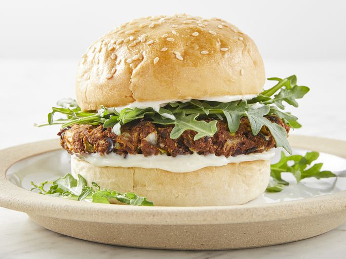

Black Bean Veggie Burgers

Description
With this black bean burger recipe, you will never eat frozen veggie burgers again! These are quick, easy, and flavorful vegetarian delight.
Ingredients
- Cooking spray
- 1 (16 ounce) can black beans, drained and rinsed
- ½ green bell pepper, cut into 2-inch pieces
- ½ onion, cut into wedges
- 3 cloves of garlic, peeled
- 1 egg
- 1 tablespoon of chili powder
- 1 tablespoon of cumin
- 1 teaspoon of Thai chili sauce or hot sauce
- ½ cup of bread crumbs
Directions